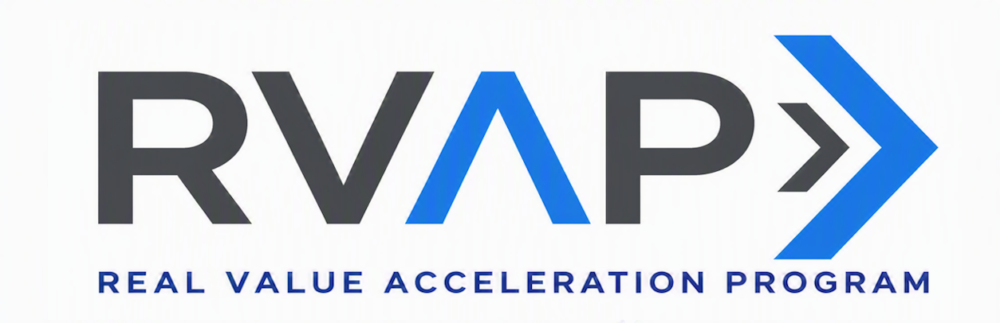

This page is not part of the site.
The address may be old, or the link may point to a page that was never published here.
Return to the AI governance program
The address may be old, or the link may point to a page that was never published here.
Return to the AI governance program